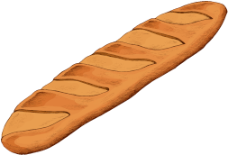

Bienvenue dans notre boulangerie, où le pain est un art. En tant que propriétaire et boulanger, je suis fier de vous présenter notre établissement, où nous sommes passionnés par la création de pains frais, savoureux et de qualité supérieure.
En entrant dans notre boulangerie, vous serez immédiatement enveloppé par l'odeur divine de la pâte à pain qui sort tout juste du four. Vous serez accueillis avec le sourire et un salut chaleureux de notre équipe de professionnels passionnés par leur métier. Nous sommes une petite entreprise familiale qui croit en la qualité de nos produits et en l'importance de créer une atmosphère accueillante pour tous ceux qui entrent dans notre boutique.
Notre pain est préparé avec les meilleurs ingrédients disponibles, en utilisant des farines de qualité supérieure et des levures naturelles qui sont fermentées pendant des heures pour donner à notre pain une saveur unique. Nous préparons également une variété de pains spéciaux tels que des baguettes croustillantes, des pains complets riches en fibres, des pains aux raisins et noix, et bien d'autres encore. Nous proposons également une variété de pâtisseries artisanales, préparées avec des ingrédients de qualité et une touche personnelle.
Vous pourrez vous régaler avec des croissants feuilletés, des brioches moelleuses, des tartes aux fruits frais et des gâteaux faits maison.Chez nous, nous accordons une grande importance à la fraîcheur de nos produits. Nous produisons donc du pain frais tous les jours, pour que vous puissiez avoir accès à des produits de qualité à tout moment.
Enfin, nous sommes fiers de dire que nous avons une équipe professionnelle, passionnée et dévouée qui travaille dur pour vous fournir le meilleur pain et les meilleures pâtisseries de la région. Nous espérons vous accueillir bientôt dans notre boulangerie, pour vous faire découvrir notre passion et notre amour pour le pain et les pâtisseries artisanales.
Je m'appelle Monsieur Farine, et je suis un ancien tueur à gages reconverti en boulanger.
Mon histoire commence il y a plusieurs années, quand j'ai commencé à travailler pour une organisation criminelle dès l'âge de 18 ans. J'ai rapidement acquis une réputation de tueur implacable et efficace, et j'ai commis des actes violents et sombres pendant des années.
Mais un jour, j'ai décidé que je ne pouvais plus vivre ainsi. J'étais fatigué de cette vie de violence et de peur, et j'ai commencé à chercher un moyen de sortir de ce monde. C'est alors que j'ai commencé à réfléchir à ce que je voulais vraiment faire de ma vie, et j'ai réalisé que j'avais toujours été fasciné par la boulangerie.
J'ai donc entrepris de me reconvertir en boulanger, sachant que cela serait un défi difficile à relever. J'ai commencé à passer des heures à apprendre les techniques de la boulangerie, à perfectionner mes recettes et à chercher un local pour installer ma propre boulangerie.
Après plusieurs mois de travail acharné, j'ai finalement ouvert ma propre boulangerie. J'étais fier de mes créations, mais je savais que je devais encore travailler dur pour me faire un nom dans ce milieu. J'ai travaillé sans relâche pour améliorer mes recettes et pour offrir à mes clients les meilleurs produits possible.
Au fil du temps, ma boulangerie est devenue de plus en plus populaire, et j'ai commencé à gagner la confiance de mes clients. Je me suis rendu compte que la boulangerie était bien plus qu'un simple métier pour moi. C'était une passion, quelque chose qui me permettait de m'épanouir et de m'exprimer d'une manière positive.Aujourd'hui, je suis fier de ma nouvelle vie et de mes délicieuses créations.
Je sais que je suis loin d'être parfait, et que mon passé violent pourrait me rattraper à tout moment. Mais j'ai choisi de ne plus jamais retourner dans ce monde sombre et violent, et de continuer à avancer sur le chemin que j'ai choisi.